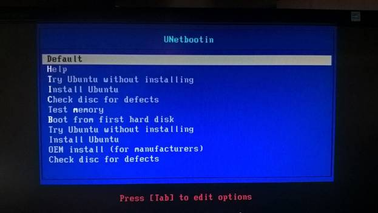

Лабораторная #7 по ОС
Лабораторная работа №7 - Создание загрузочной флешки.
Цель работы: Получить представление о способе установки операцинной системы.Введение
В этой лабораторной работе, будет создаваться загрузочная флешка, или по другому Live USB. Для этого нам потребуется:
- Флешка; Учтите, что флешка должна быть минимум 4 гб объёмом (хотя для некоторых дистрибутиво Linux-систем могут потребоваться и флешки меньшего объёма) и так же вся важная информация с неё должна быть скопирована, потому что флешка будет форматироваться.
- Образ какой-либо системы в нашем случае Ubuntu
Создание
Флешку, которую мы сделаем, это будет флешка с ubuntu, с другими ОС процесс происходит аналогично. ПО для создания Live USB систем из ISO-образа довольно много, вот некоторые популярные:
- UNetbootin
- Rufus
- Windows7-USB-DVD-Download-Tool - для Windows 7
- Win32 Disk Imager
- UltraISO
- PeToUsb
- Universal USB Installer
- Microsoft Windows Installation Media Creation Tool - для Windows 8/10
Скорее всего их больше чем в этом списке, пользуйтесь тем чем вам удобнее, и тем, что лучше всего работает. Мы рассмотрим создание загрузочной флешки на примере UNetbootin.
Скачаете и запустите программу. Перед вами будет окно(как на скриншоте ниже), данная программа позволяет вам создавать загрузочные LiveUSB-диски для Ubuntu, Fedora и любых других дистрибутивов Linux без записи CD (Brasero или k3b). Он работает на Windows, Linux и Mac OS X. Вы можете либо загрузить какой-либо поддерживаемый дистрибутив прямо в окне программы, либо предложить свой собственный файл '.iso' Linux. Распространяется на условиях лицензии GNU GPLv2
Мы в данном случае выбираем «Образ диска» и путь до ISO файла с образом системы.
Если у вас вдруг нету нужного образа, вы тогда выбираете «дистрибутив» и указываете нужную вам версию и ждите пока он сначала скачается.
Как видите, если бы мы выбрали другой пункт в прошлом скриншоте, то программа его бы ещё скачала, а так сразу перейдём к записи его на флешку. У программы большой выбор дистрибутивов и есть из чего выбрать.
Вот и все. Кстати говоря, эту программу можно использовать и для установки Windows».
Вот так выглядят файлы на флешке.
Теперь интереснее, далее мы идём в BIOS, на моём снимке, у меня красивый и новый UEFI, эта штука пришла на смену устаревшего BIOS. На этом снимке есть классная штука как, Boot Override, после boot option, она позволяет сразу выбрать с чего грузиться и после нажатия на соответствующий пункт меню будет осуществлена автоматическая перезагрузка и загрузка с нужного носителя, не факт, что у вас такая штука будет.
Но у вас скорее всего будет, что то типа такого:
В данном случае от вас требуется изменить порядок загрузки устройств таким образом, чтобы флешка с системой оказалась на первом месте. Если вдруг на этом этапе у вас будет не видна флешка, требуется убедиться/сделать несколько вещей:
- Правильно ли записанна флешка, в случае чего осуществить её перезапись, либо проверить флешку на другой машине, видит ли её BIOS другой машины, если флешка не видна и на другой машине, осуществить её перезапись, и если после этого тоже ничего не изменилось, то поменять на другую флешку.
- Правильно ли настроен Биос, а именно: в BIOS’e, во вкладке Boot, измените значение Secure Boot на Disabled, если появиться дополнительный пункт OS Mode Selection, выбрать CSM OS
- Так же В BIOS’e, на закладке Advanced, отключите режим Fast Bios Mode
- Так же если вы подключили флешку в USB 3.0(обычно они синего цвета), то она может быть не видна, в этом случае используйте другой разьём с USB 2.0 или древнее.
- Так же имейте в виду, что совсем старые материнские платы могут не поддерживать загрузку с флешки, в этом случае лучшим из вариантов это установка с диска.
Выбираем нужные нам пункты и идём на перезагрузку. Если оставить по умолчанию (Default), то загрузиться ОС, с возможностью установки.
Перед вами обычная ubuntu. Если щелкнуть по выделенному ярлыку, то начнётся установка.
А дальше все точно так же как и при установке на виртуальную машину. Имейте в виду, что от вас требуется только создать загрузочную флешку и загрузиться с ней и всё!
Если вдруг за место загрузчика UNetbootin у вас загрузился GRUB, то все равно смысл будет в принципе одинаковый
И так же на всякий случай опишу вариант с Windows7-USB-DVD-Download-Tool
Программа весит копейки и проста как наш автопром, процесс создания загрузочной флешки в себе 4 шага.
Выбираем путь до iso образа.

Выбираем тип носителя, либо флешка, либо диск.
Выбрать флешку и дождаться окончания процесса.
Вот и все, флешка создана.
Структура созданных файлов.
И далее проделать тоже самое, что и с ubuntu